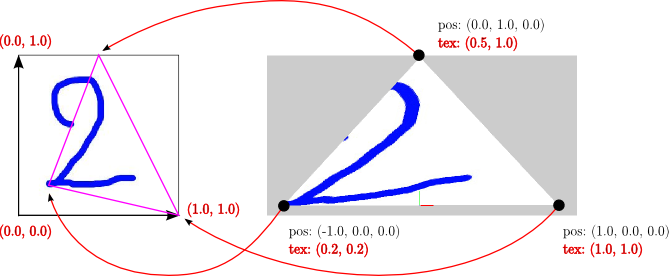

Practical 7 - Texturing
You might have heard about texturing as a technique that could increase the realism of a rendering, by mapping parts of an image onto triangles. In fact, texturing is a wider concept: it is the sampling of a function \(f\) at a real valued position \(p\). The coordinates of \(p\) are all in the range \(\left[0,1\right]\). The function \(f\) is known at regularly spaced discrete positions, i.e. on a 1-, 2-, or 3-dimensional grid, depending on the case. The values of \(f\) on this grid is referred to as the texture and the real valued position \(p\) is known as the texture coordinate.
In this practical, all textures will be 2D RGBA images, i.e. functions that associate a RGBA color to a 2-dimensional coordinate. The texture coordinates are generally written \((u,v)\) in that case. Such coordinates are given for each vertex of a triangle (see the image below to see where is the coordinates origin in the OpenGL convention). Texture coordinates are vertex attributes, thus fragments will have interpolated vertex coordinates. The texture will be then sampled at those coordinates, giving texels (texture elements) and a fragment will use its texel to compute its final color.
You will not code much in this practical. We have chosen to let you observe the code and experiment the effects of different option values, in order to understand both the mecanism and the possibilities of texturing. When you got the concept, you will then add texturing to the renderables of your project.
Textures can have other dimensions and store different values. For example:
- a two dimensional texture storing real values that represent the height of the ground relatively to a known maximum height. The texture is what we call an elevation map
- a one dimensional texture storing RGB colors. This is typically used as a lookup table to associate a color to a scalar value, in order to visualise 1-D values defined on a surface.
- a three dimensional texture storing real values in order to visualize medical images (CT scan, IRM, ...).
The definition of texture coordinates for 2D surfaces may be a tough problem. The surface needs to be embedded in a two dimensional space. Even for 3D meshes, some methods exists but they are beyond the scope of this course. Thus, for the project, try to keep things simple or find a mesh with existing texture coordinates relatively to an existing image (see exercice 1).
1. Reminder: How to compile from scratch
#Switch to a C++11 compiler (at ENSIMAG only)
source gcc493.sh
#Compile external libraries (if new lib has been added)
cd extlib/
make clean_all
make
#Compile project
cd ../
rm -rf build/
mkdir build/
cd build/
cmake ..
make -j 82. Additional files
- Download the source of the practical here .
- Unzip it.
- Copy the extlib directory from you previous practical in this new directory called practical7.
Alternatively, you can simply create a symbolic link to the existing libraries.
For example: cd practical7 then ln -s ../practical2/extlib - Compile your project by following the previous instructions.
3. About the provided code
The provided code illustrates different basic texturing techniques:
- CPU code is encapsulated into C++ classes that are gathered in a texturing subdirectory.
- GPU code is gathered in the shaders subdirectory.
We will now give more details about important parts of the provided code.
3.1 CPU code for texturing
Set up a texture
Like any memory place in OpenGL, a texture is managed thanks to an ID. This ID is first generated then bound to a binding point before transferring the data to the GPU. Apart from the texture options defined by the glTexParameteri function (studied in the following exercises), this operation is very similar to what you are now used to do on vertex buffers. After this operation is done (only once), the texture can be used for rendering.
// Create a new texture id, then bind it
glGenTextures(1, &m_texId);
glBindTexture(GL_TEXTURE_2D, m_texId);
// Texture options
glTexParameteri(GL_TEXTURE_2D, GL_TEXTURE_MIN_FILTER, GL_NEAREST);
glTexParameteri(GL_TEXTURE_2D, GL_TEXTURE_MAG_FILTER, GL_NEAREST);
glTexParameteri(GL_TEXTURE_2D, GL_TEXTURE_WRAP_S, GL_CLAMP_TO_EDGE);
glTexParameteri(GL_TEXTURE_2D, GL_TEXTURE_WRAP_T, GL_CLAMP_TO_EDGE);
// Load an image (here using the sfml library)
sf::Image image;
image.loadFromFile(filename);
// sfml inverts the v axis...
// Hence, flip it to put the image in OpenGL convention: lower left corner is (0,0)
image.flipVertically();
// Transfer the image to the texture on the GPU
glTexImage2D(GL_TEXTURE_2D, 0, GL_RGBA32F, image.getSize().x, image.getSize().y, 0, GL_RGBA, GL_UNSIGNED_BYTE, (const GLvoid*)image.getPixelsPtr());
// Release the texture id
glBindTexture(GL_TEXTURE_2D, 0);Define texture coordinates
As we saw in the introduction, texture coordinates are vertex attributes. As such, they are loaded in a vertex buffer. This is not something new, but you should remember to define and load the texture coordinate attribute.
// Example with a single triangle
m_positions.push_back(glm::vec3(-1.0, 0.0, 0.0));
m_positions.push_back(glm::vec3( 1.0, 0.0, 0.0));
m_positions.push_back(glm::vec3( 0.0, 1.0, 0.0));
m_texCoords.push_back(glm::vec2(0.2, 0.2)); //close to the texture's lower left corner
m_texCoords.push_back(glm::vec2(1.0, 0.0)); //lower right corner of the texture
m_texCoords.push_back(glm::vec2(0.5, 1.0)); //middle of the top line of the texture
// Generate buffers and send data to the GPU, as usual
...
glGenBuffers(1, &m_tBuffer);
glBindBuffer(GL_ARRAY_BUFFER, m_tBuffer);
glBufferData(GL_ARRAY_BUFFER, m_texCoords.size()*sizeof(glm::vec2), m_texCoords.data(), GL_STATIC_DRAW);Using the texture in the shader program
This step is actually different than for other type of vertex attributes. The texture should first be bound to a binding point the shader program can use. This binding point is named a texture unit, and in this case we will use GL_TEXTURE0. In the fragment shader, we will use a special uniform of type sampler2D named texSampler. This uniform will sample a texel at the given texture coordinate. In order for the sampler to know which texture it should sample, this uniform should be initialized with the texture unit the texture is bound to.
// Send positions, normals, ... as usual
...
// Get ids from the shader program
int texcoordLocation = m_shaderProgram->getAttributeLocation("vTexCoord");
int texsamplerLocation = m_shaderProgram->getUniformLocation("texSampler");
// Bind texture on the texture unit 0
glActiveTexture(GL_TEXTURE0);
glBindTexture(GL_TEXTURE_2D, m_texId);
// Tells the sampler to use the texture unit 0
glUniform1i(texsamplerLocation, 0);
// Populate the vertex attribute with the texture coordinates buffer
glEnableVertexAttribArray(texcoordLocation);
glBindBuffer(GL_ARRAY_BUFFER, m_tBuffer);
glVertexAttribPointer(texcoordLocation, 2, GL_FLOAT, GL_FALSE, 0, (void*)0);
// Once you're done, release the texture
glBindTexture(GL_TEXTURE_2D, 0);3.2 GPU code for texturing
Vertex shader
In the vertex shader, there is not much to do. You just have to transmit the texture coordinates to the fragment buffer in order to have interpolated texture coordinates for each fragment.
#version 400
uniform mat4 projMat, viewMat, modelMat;
in vec3 vPosition;
in vec2 vTexCoord;
out vec2 surfel_texCoord;
void main()
{
gl_Position = projMat*viewMat*modelMat*vec4(vPosition, 1.0f);
// simply pass the texture coordinate to the fragment
surfel_texCoord = vTexCoord;
}Fragment shader
The fragment is more interesting since this is the place where a texel is fetched and used to compute the color of a fragment. The sampling of the texture at the given texture coordinate is done by the sampler (a sampler2D in our case as the texture is two-dimensional). This operation is performed by applying the function texture() with the sampler and the texture coordinate.
#version 400
uniform sampler2D texSampler;
in vec2 surfel_texCoord;
out vec4 outColor;
void main()
{
// here, the color is simply the texel
outColor = texture(texSampler, surfel_texCoord);
}In the above example, the final color of a fragment is the sampled texel. We can use the texel in other ways. For example, it can be combined with the local illumination color of a surfel (as done in the previous practical).
#version 400
...
void main()
{
// compute the Phong color based on material and lights
illuminationColor = ...
// get the texel
textureColor = texture(texSampler, surfel_texCoord);
// combine the two, using custom operations (here a simple *) or the GLSL funtion `mix`
outColor = textureColor * vec4(illuminationColor, 1.0);
}Exercise 1: Textured bunny
Look at the files texturing/TexturedLightedMeshRenderable.[cpp|hpp]. Texturing was added to the mesh class of previous practical. Identify the different steps of texturing, presented in the above section.
Exercise 2: Wrapping options
First, let's focus on the ground plane of the scene. A grass texture is directly mapped on it: the coordinates textures of each corner are respectively \((0,0)\), \((1,0)\), \((1,1)\) and \((0,1)\).
Ok, the plane looks like your garden. But what happens if you zoom on it? You should clearly see the (square) pixels of the image, which is not really nice. Actually this is due to the image resolution (here 512x512 pixels): it looks good only if mapped on a not too large plane, or if the camera is far enough. One could use a larger image, which would however consumes more ressouces. The usual solution is to use texture tiling, which means an image will be repeated to fully cover the polygon to texture, while limiting its zooming factor.
Several wrapping options could be defined, with the command glTexParameteri(GL_TEXTURE_2D, GL_TEXTURE_WRAP_S, ...);.
Press the F6 key to change the wrapping options for the ground:
- the texture coordinates will not be in \([0,1]^2\) anymore, but in \([-5,5]^2\)
-
the wrapping value will be
GL_CLAMP_TO_EDGEthenGL_REPEAT,GL_MIRRORED_REPEATandGL_CLAMP_TO_BORDER.
Questions:
- What is the behavior with these different values?
- What caracteristics must be fulfilled by the texture image?
Exercise 3: Filtering options
The F7 key is assigned to interactively toggle the texture interpolation mode between GL_LINEAR and GL_NEAREST, for the ground plane. This is again done with the glTexParameteri function (see how key events are handled in TexturedPlaneRenderable.cpp).
Observe and understand the differences. At what rendering stage is this filtering operation performed?
Exercise 4: Multi-resolution (mipmapping)
Texture resolution plays an important role in the quality of the scene rendering. However, with a higher resolution comes a higher price in terms of ressource consumption (storage) and bandwith (texture loading and access). Also, a polygon rendered far away doesn't need to be rendered with high resolution. In fact, it would run into the aliasing problem linked to discrete sampling of the texture.
The mipmapping technique is a way to address these issues by using several pre-filtered resolution levels of the same texture image. Depending on the distance between each fragment and the camera, the rendering process will automatically switch to the most adequate resolution of the texture.
The cube on the left (an instance of the TexturedCubeRenderable class) is textured without mipmapping. However, mipmapping is used for the cube in the middle (a MipMapCubeRenderable).
- Look at the MipMapCubeRenderable class: a single texture is created, however several images are loaded with different resolutions (here 256x256, 128x128, ...). You can observe these images directly with a standard viewer: eog textures/mipmap1.png. A different figure enables to clearly identify which image is currently used to render a fragment.
- Play with the camera to zoom in and out, and vizualize the scene with different angles. On the left cube, you should clearly observe the aliasing problem. On the middle one, notice how the rendered image is swapped from one view point to another.
-
In mipmapping as well, several filtering options are available:
GL_NEAREST_MIPMAP_NEAREST,GL_LINEAR_MIPMAP_NEAREST,GL_NEAREST_MIPMAP_LINEARandGL_LINEAR_MIPMAP_LINEAR. Toggle the F8 key to test these filtering options. - Can you explain the differences? What parameter provides the best and smoothest rendering quality? At what cost?
In a real application, you generally won't create several images at different resolutions. Instead, one should load the desired image then use the glGenerateTextureMipmap function once to generate the sub-resolutions images.
Exercise 5: Multi-texturing
The cube on the right (of class MultiTexturedCubeRenderable) is textured with two textures. This means that:
- two textures are created and loaded
- two texture units are used
- a vertex has two texture coordinates attributes
- the fragment shader uses two sampler.
In order to clearly see the two different textures, the rendering is animated: the final color of a fragment is a linear interpolation between the two texels. The coefficient for the linear interpolation is simply the sinus of the animation time (see the blendingCoeff in MultiTexturedCubeRenderable.cpp and multiTextureFragment.glsl). This example not only shows you how to use multitexturing, but also how to animate the rendering of your objects.
You could also try different combinations of the illuminated and texture(s) colors, in the fragment shader. So far a multiplication is done. Could you add the colors, use one of them only or use their alpha channel?
Do it manually or document yourself about the GLSL mix function to combine colors.
Exercice 6: Project related
Texturing is the last feature you will have seen in this practicals. You can now add texturing to the renderables in your project. For example, we recommend to texture your kart or your driver, or some surrounding objects. If you do not want to spend hours to build a texture and a set of texture coordinates, find repeating textures. Take a moment to fully understand how both concepts work.